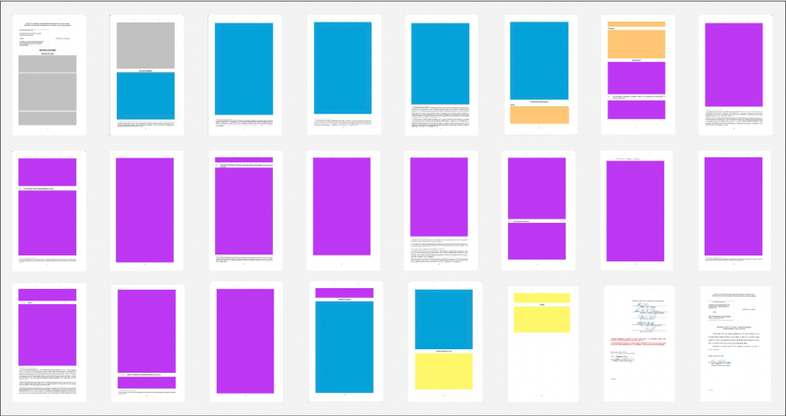
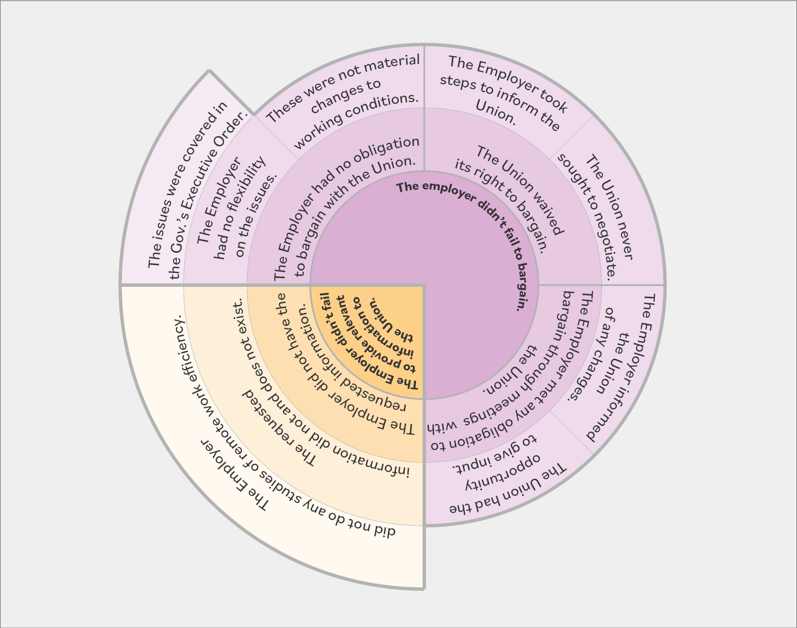

Overview - Leveling the Playing Field for Workers
Legal decisions can be difficult to understand, especially for non-attorneys. The texts are often long and dense and contain jargon sometimes called legalese. This can put workers and their unions at a relative disadvantage when legal issues come up at work, since workers typically have less access to time, money, and lawyers than their employers.
This thesis applies information design principles to make the information in legal decisions quicker and easier to understand. It focuses on unfair labor practices—a particular type of legal case impacting workers and unions—as a case study. Non-attorney union leaders, representatives, and other volunteers were consulted as potential users.
Ultimately, this project proposes a system for making existing unfair labor practice decisions easier to understand, with the long-term goal of empowering non-attorneys to better advocate for themselves on legal issues at work.
Process
This project involved three main design phases:
- 1. The model - a model defining:
-
- the elements in a decision and
- how they relate to each other;
- 2. The representation - representation of an argument itself; and
- 3. The user interface - how the representation is shared with potential users.
Concept map of the major design components in this project.
The Model
Representing the key elements in legal decisions requires first defining what those key elements are and how they relate to each other. While not directly visible in the final product, any representation will have an underlying model of its components. Describing that model makes transparent the underlying assumptions and provides an opportunity to intentionally establish emphasis and major relationships between the components.
However, existing work in defining arguments doesn't provide one consistent and standardized way to represent arguments or to name the elements in them. Different definitions are used for different purposes.
Some ways the information in a legal argument can be categorized are:
- Which party's argument it supports;
- The source of the information (i.e. charging party, respondent or labor board; or union, employer, or labor board);
- Whether the type of information can be considered fact, argument, statute, or something else;
- When the information was presented; and
- The section of the decision.
In this context, there isn't one “right” model, but rather multiple models relevant to different approaches to visualizing the decision. It is possible to have a “wrong” model, though, if it is based on invalid legal principles.
To do this, I started by attempting to categorize the information directly on a decision document, first by hand and then digitally. The following images show two examples of this.
Example of directly coding decision information: The left (pink) shows locations of the Employer's argument and the right (teal) shows locations of counter arguments to the Employer's arguments.

Example of directly coding decision information: Colors represent each section of the decision.
In this part of the work, I alternated between testing the application of different ways to code the information and sketching models for how those parts of the information fit together. The following three images are some of the sketches from that process.
Sketch of the components of an unfair labor practice case as the Union's position in response to the statue and precedent and the Employer's position in response to the Union's position.
Sketch of the components of an unfair labor practice case as case-specific information and pre-existing (in this sketch “static”) information entering a “black box” in which the Board interprets them and produces a decision.
Sketch of the components of an unfair labor practice case as a matrix of two methods of coding the information, who it supports and the type of information.
Ultimately, the iterative process above, as well as conversations with users about the information they most value and use led to the following final model of a decision for this project.
This model emphasizes a: the source of the information and b: when the information is presented, two attributes familiar and meaningful to potential users of the resulting representation, users who might participate in an unfair labor practice case.
It treats the Board as a source of truth, given that the visualization is applied after the Board's decision and that ultimately the Board's decision determines any impact of the case. It also acknowledges that the major voices in a representation of the decision will differ, depending on the starting point in the timeline of the decision.
Final model used in this thesis, emphasizing source of the information and the timeline of the unfair labor practice process.
Representation of an Argument
Next, the argument within a legal decision can be coded in different ways. The information design challenge is finding a way to show the hierarchical attributes of an argument while also indicating where the argument succeeds or not.
Major approaches to representing hierarchies in information design use either enclosure or nodes and links. Representations of hierarchies can also:
-
- Use area to represent an additional variable, or not;
- Be arranged rectilinearly, radially, or in neither way; and
- Use different shapes to represent the elements.
The following video demonstrates the application of six approaches to representing the argument in the case study decision.
Each of these approaches can be categorized according to the criteria above.
1. Sunburst chart: nested hierarchy, uses area, radial arrangement

2. Treemap nested hierarchy, uses area, rectilinear arrangement
3. Nested Circles nested hierarchy, does not use area for a quantitative variable, rectilinear arrangement, round shape
4. Nested Rectangles nested hierarchy, does not use area for a quantitative variable, rectilinear arrangement, rectangular shape
5. Nodes and Links node and link hierarchy, does not use area for a quantitative variable, mixed arrangement, round shape
6. Grouped Nodes and Links: node and link hierarchy, does not use area for a quantitative variable, rectilinear arrangement, rectangular shape
Each approach has relative strengths and weaknesses. For example, some viewers reflected that the approaches with round shapes (#3 and #5 above) helped them to see the elements in the hierarchy as clearer units.
However, while possibly less dynamic, the rectangular options provide better opportunity for including additional information from the decision because the shape of these options more easily allows for additions and annotations.nits.
Each of the examples above shows the same information, but this is only one component of the decision, the Employer's argument in response to the complaint. Only #4 and #6 above allow for the addition of the Board's evaluation of the Employer's argument without creating chaos in the arrangement. Of those options, potential users consistently preferred the grouped nodes and and links version.
The following images show the addition of the Board's evaluation to these two approaches. The color encoding is changed from representing the overall claims to representing the voice of the Employer and the board to accommodate this additional information.
Nested Rectangles approach (#4 above), with the addition of the Board's evaluation (orange) of the Employer's argument (blue).
Grouped Nodes and Links approach (#6 above), with the addition of the Board's evaluation (grey) of the Employer's argument (blue).
The User Interface
Potential users of this work emphasized the convenience of “one-pager” printable formats. ...
While the examples above focus on the argument in RISLRB ULP-6284, and where possible also the Board's evaluation of that argument, potential users emphasized that they would like to see information from other parts of the decision as well. They were especially interested in the charge and the orders, to know what the Union originally claimed and to know any related consequences from the decision.
One challenge in incorporating information from earlier and later in the timeline of the ULP process is that items describe in the charge, complaint, argument (through the hearings), decision, and orders don't correspond to each other in a 1-to-1 relationship; elements in one column can refer to multiple in another.